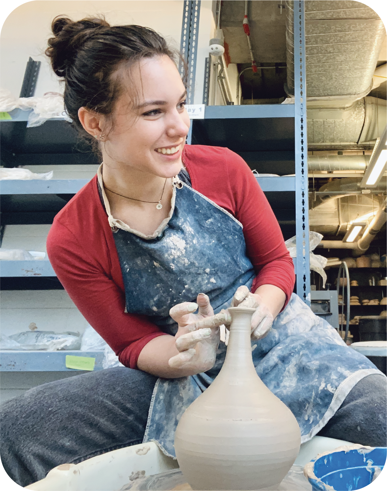
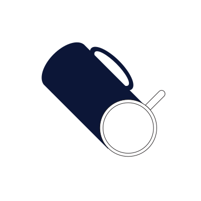

Hello, my name is Charlotte, I am a ceramist located in Cambridge MA. I am a certified granite stater, tea enthusiast, and lover of bad movies. I started learning about clay when I was 10 in a basement studio behind a parking garage. But even then, if I had my hands caked in mud, I was happy. I adore making fun mugs, so I hope you enjoy using them as much as I do making them! I spend my time away from the studio wandering around a museum or getting lost in the wilderness, but I'm probably thinking about my next pottery design.